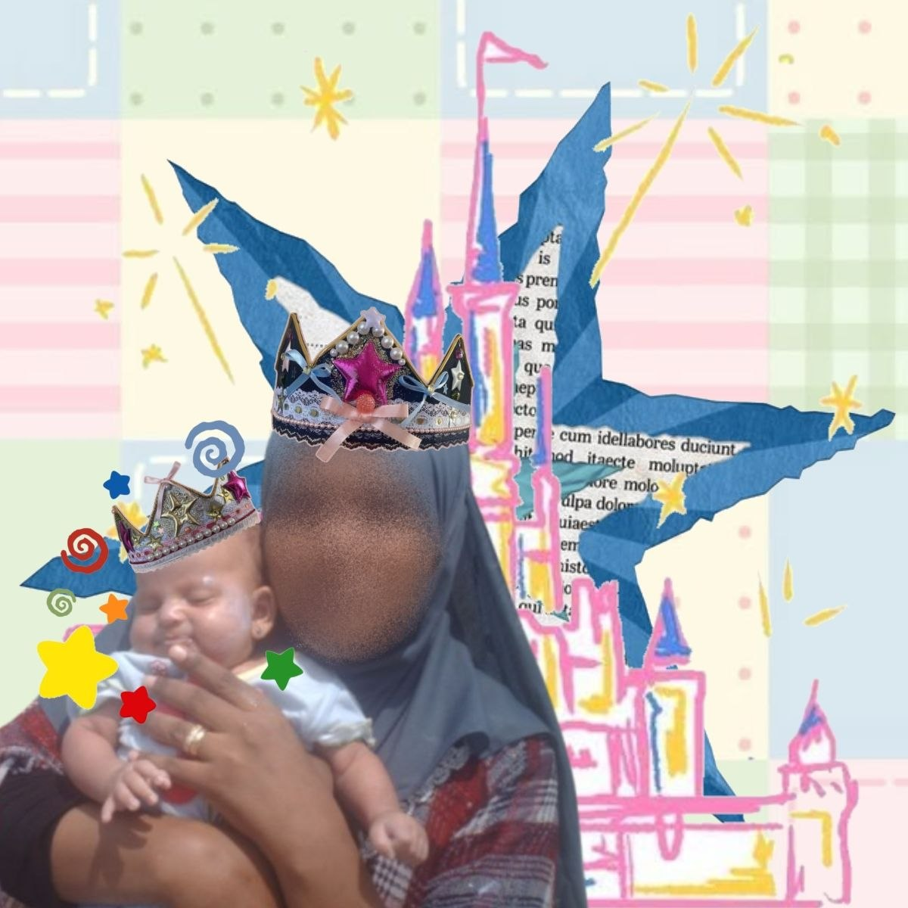
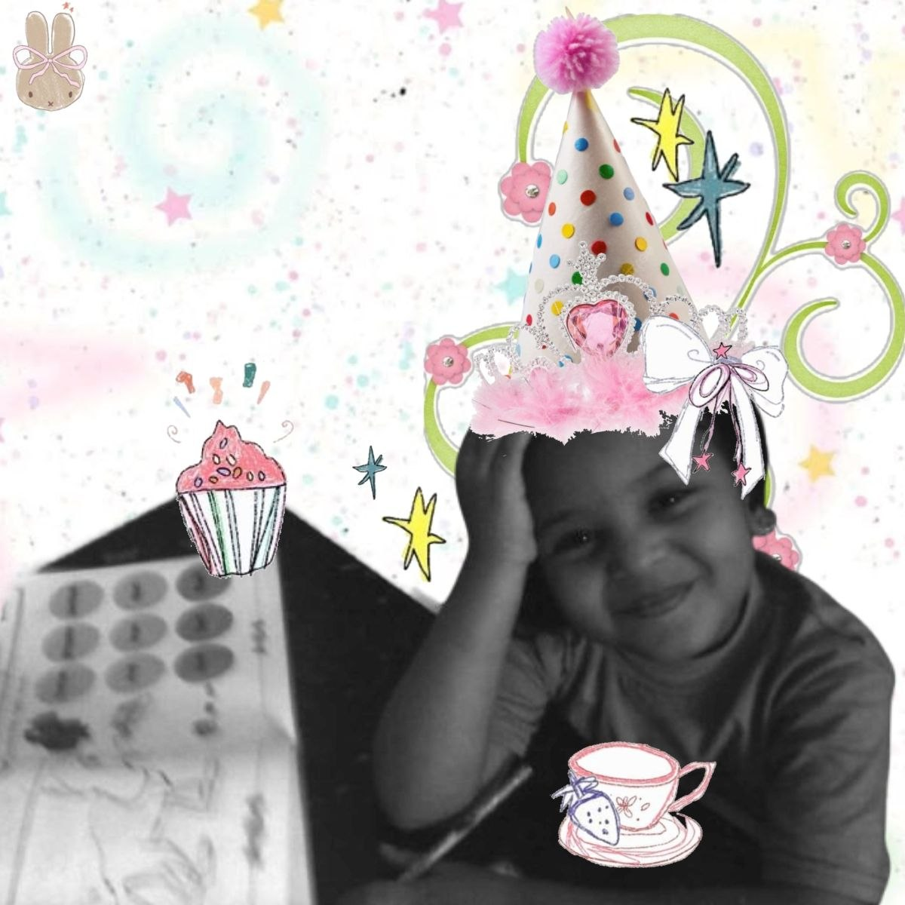

Once upon a time, A princess was born. Her parents, the king and the queen, saw her as the light of their lives and the girl to be the reason to enlighten their kingdom, and so they named her “Noor, ” meaning light in Arabic.
Princess Noor was born in a family blessed with healing magic, as her parents worked on making the kingdom a healthy place, healing patients and helping the weak, Princess Noor’s parents worked hard for her to learn and practice her magic she was set on a standard to be a healing magician just like her parents but as her mother saw the truth in her, she realized that princess Noor wasn’t just like that but more.
The queen didn’t suppress it; she wanted her princess to find herself, and so she gave her child all the materials, books, tutoring in the arts, and videos that could help her see what she wanted.


Princess Noor liked to watch her parents practice healing magic, but she liked a lot of things too. She liked to debate opinions and ideologies; she liked to study math, to draw and design architecture; she liked to imagine things; she loved to do everything, and she loved the feeling of love. And she aspired to make people feel that too.
One evening, while exploring the archives of the royal library, Princess Noor discovered ancient texts hinting at a magic she never thought of before: Creation magic. Unlike pure healing magic, this magic doesn’t heal people but heals the mind; this magic allows its user to turn thoughts, designs, and love into physical reality.
Princess Noor was mesmerized with that magic; something that connects all her emotions and interests can be created ...She worked on making this magic a reality for her.And so